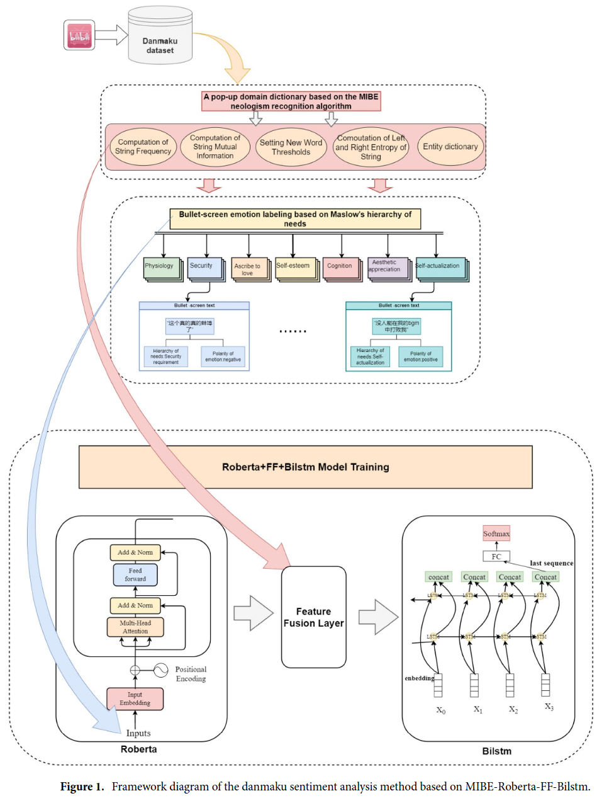

|
|
Maximizing User Connectivity in AI-Enabled Multi-UAV Networks: A Distributed Strategy Generalized to Arbitrary User Distributions
Bowei Li, Yang Xu, Ran Zhang, Miao Wang
2024
abstract |
bibtex |
arXiv
Deep reinforcement learning (DRL) has been extensively applied to Multi-Unmanned Aerial Vehicle (UAV) network (MUN) to effectively enable real-time adaptation to complex, time-varying environments. Nevertheless, most of the existing works assume a stationary user distribution (UD) or a dynamic one with predicted patterns. Such considerations may make the UD-specific strategies insufficient when a MUN is deployed in unknown environments. To this end, this paper investigates distributed user connectivity maximization problem in a MUN with generalization to arbitrary UDs. Specifically, the problem is first formulated into a time-coupled combinatorial nonlinear non-convex optimization with arbitrary underlying UDs. To make the optimization tractable, a multi-agent CNN-enhanced deep Q learning (MA-CDQL) algorithm is proposed. The algorithm integrates a ResNet-based CNN to the policy network to analyze the input UD in real time and obtain optimal decisions based on the extracted high-level UD features. To improve the learning efficiency and avoid local optimums, a heatmap algorithm is developed to transform the raw UD to a continuous density map. The map will be part of the true input to the policy network. Simulations are conducted to demonstrate the efficacy of UD heatmaps and the proposed algorithm in maximizing user connectivity as compared to K-means methods.
@article{li2024maximizing,
title={Maximizing User Connectivity in AI-Enabled Multi-UAV Networks: A Distributed Strategy Generalized to Arbitrary User Distributions},
author={Li, Bowei and Xu, Yang and Zhang, Ran and Wang, Miao and others},
journal={arXiv preprint arXiv:2411.05205},
year={2024}
}
|
|
|
Learning with Dynamics: Autonomous Regulation of UAV Based Communication Networks with Dynamic UAV Crew
Ran Zhang, Bowei Li, Liyuan Zhang, Jiang (Linda) Xie, and Miao Wan
2024
abstract |
bibtex |
arXiv
Unmanned Aerial Vehicle (UAV)-based communication networks (UCNs) are a key component in future mobile networking. To handle the dynamic environments in UCNs, reinforcement learning (RL) has been a promising solution attributed to its strong capability of adaptive decision-making free of the environment models. However, most existing RL-based research focuses on control strategy design assuming a fixed set of UAVs. Few works have investigated how UCNs should be adaptively regulated when the serving UAVs change dynamically. This article discusses RL-based strategy design for adaptive UCN regulation given a dynamic UAV set, addressing both reactive strategies in general UCNs and proactive strategies in solar-powered UCNs. An overview of the UCN and the RL framework is first provided. Potential research directions with key challenges and possible solutions are then elaborated. Some of our recent works are presented as case studies to inspire innovative ways to handle dynamic UAV crews with different RL algorithms.
@article{zhang2024learning,
title={Learning with Dynamics: Autonomous Regulation of UAV Based Communication Networks with Dynamic UAV Crew},
author={Zhang, Ran and Li, Bowei and Zhang, Liyuan and Wang, Miao and others},
journal={arXiv preprint arXiv:2409.17139},
year={2024}
}
|
|
|
When learning meets dynamics: Distributed user connectivity maximization in UAV-based communication networks
Bowei Li, Saugat Tripathi, Salman Hosain, Ran Zhang, Miao Wang
2024
abstract |
bibtex |
arXiv
Distributed management over Unmanned Aerial Vehicle (UAV) based communication networks (UCNs) has attracted increasing research attention. In this work, we study a distributed user connectivity maximization problem in a UCN. The work features a horizontal study over different levels of information exchange during the distributed iteration and a consideration of dynamics in UAV set and user distribution, which are not well addressed in the existing works. Specifically, the studied problem is first formulated into a time-coupled mixed-integer non-convex optimization problem. A heuristic two-stage UAV-user association policy is proposed to faster determine the user connectivity. To tackle the NP-hard problem in scalable manner, the distributed user connectivity maximization algorithm 1 (DUCM-1) is proposed under the multi-agent deep Q learning (MA-DQL) framework. DUCM-1 emphasizes on designing different information exchange levels and evaluating how they impact the learning convergence with stationary and dynamic user distribution. To comply with the UAV dynamics, DUCM-2 algorithm is developed which is devoted to autonomously handling arbitrary quit's and join-in's of UAVs in a considered time horizon. Extensive simulations are conducted i) to conclude that exchanging state information with a deliberated task-specific reward function design yields the best convergence performance, and ii) to show the efficacy and robustness of DUCM-2 against the dynamics.
@article{li2024learning,
title={When learning meets dynamics: Distributed user connectivity maximization in UAV-based communication networks},
author={Li, Bowei and Tripathi, Saugat and Hosain, Salman and Zhang, Ran and Wang, Miao and others},
journal={arXiv preprint arXiv:2409.06010},
year={2024}
}
|
|
|
Research on domain ontology construction based on the content features of online rumors
Jianbo Zhao, Huailiang Liu, Weili Zhang, Tong Sun, Qiuyi Chen, Yuehai Wang, Jiale Cheng, Yan Zhuang, Xiaojin Zhang, Shanzhuang Zhang, Bowei Li & Ruiyu Ding
Scientific Reports, 2024
abstract |
bibtex |
article
Online rumors are widespread and difficult to identify, which bring serious harm to society and individuals. To effectively detect and govern online rumors, it is necessary to conduct in-depth semantic analysis and understand the content features of rumors. This paper proposes a TFI domain ontology construction method, which aims to achieve semantic parsing and reasoning of the rumor text content. This paper starts from the term layer, the frame layer, and the instance layer, and based on the reuse of the top-level ontology, the extraction of core literature content features, and the discovery of new concepts in the real corpus, obtains the core classes (five parent classes and 88 subclasses) of the rumor domain ontology and defines their concept hierarchy. Object properties and data properties are designed to describe relationships between entities or their features, and the instance layer is created according to the real rumor datasets. OWL language is used to encode the ontology, Protégé is used to visualize it, and SWRL rules and pellet reasoner are used to mine and verify implicit knowledge of the ontology, and judge the category of rumor text. This paper constructs a rumor domain ontology with high consistency and reliability.
@article{zhao2024research,
title={Research on domain ontology construction based on the content features of online rumors},
author={Zhao, Jianbo and Liu, Huailiang and Zhang, Weili and Sun, Tong and Chen, Qiuyi and Wang, Yuehai and Cheng, Jiale and Zhuang, Yan and Zhang, Xiaojin and Zhang, Shanzhuang and others},
journal={Scientific Reports},
volume={14},
number={1},
pages={12134},
year={2024},
publisher={Nature Publishing Group UK London}
}
|
|

|
Sentiment analysis of video danmakus based on MIBE-RoBERTa-FF-BiLSTM
Jianbo Zhao, Huailiang Liu, Yakai Wang, Weili Zhang, Xiaojin ZhangBowei Li, Tong Sun, Yanwei Qi, Shanzhuang Zhang
Scientific Reports, 2024
abstract |
bibtex |
article
Danmakus are user‑generated comments that overlay on videos, enabling real‑time interactions between viewers and video content. The emotional orientation of danmakus can reflect the attitudes and opinions of viewers on video segments, which can help video platforms optimize video content recommendation and evaluate users’ abnormal emotion levels. Aiming at the problems of low transferability of traditional sentiment analysis methods in the danmaku domain, low accuracy of danmaku text segmentation, poor consistency of sentiment annotation, and insufficient semantic feature extraction, this paper proposes a video danmaku sentiment analysis method based on MIBE‑RoBERTa‑FF‑BiLSTM. This paper constructs a “Bilibili Must‑Watch List and Top Video Danmaku Sentiment Dataset” by ourselves, covering 10,000 positive and negative sentiment danmaku texts of 18 themes. A new word recognition algorithm based on mutual information (MI) and branch entropy (BE) is used to discover 2610 irregular network popular new words from trigrams to heptagrams in the dataset, forming a domain lexicon. The Maslow’s hierarchy of needs theory is applied to guide the consistent sentiment annotation. The domain lexicon is integrated into the feature fusion layer of the RoBERTa‑FF‑BiLSTM model to fully learn the semantic features of word information, character information, and context information of danmaku texts and perform sentiment classification. Comparative experiments on the dataset show that the model proposed in this paper has the best comprehensive performance among the mainstream models for video danmaku text sentiment classification, with an F1 value of 94.06%, and its accuracy and robustness are also better than other models. The limitations of this paper are that the construction of the domain lexicon still requires manual participation and review, the semantic information of danmaku video content and the positive case preference are ignored.
@article{zhao2024sentiment,
title={Sentiment analysis of video danmakus based on MIBE-RoBERTa-FF-BiLSTM},
author={Zhao, Jianbo and Liu, Huailiang and Wang, Yakai and Zhang, Weili and Zhang, Xiaojin and Li, Bowei and Sun, Tong and Qi, Yanwei and Zhang, Shanzhuang},
journal={Scientific Reports},
volume={14},
number={1},
pages={5827},
year={2024},
publisher={Nature Publishing Group UK London}
}
|
|
{kind=link}